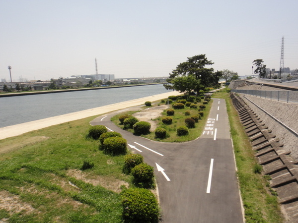
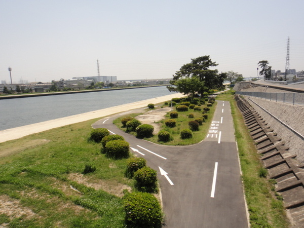

Course Information
全長7kmの武庫川サイクリングロードは初心者でも川沿いで走りやすくオススメ。
武庫川沿いを西宮側から宝塚に向かって走るコースです。
スポーツ自転車の操作に慣れてきた初級者の方でも川沿いで走りやすくおすすめです。
道は舗装された道路とされていない道路に別れているエリアと、舗装された道路のみのエリアがありますが、後者のエリアも道幅がけっこうあるので他の通行者が気になるようなこともなく気持ちよく走ることができます。
折り返し地点となる宝塚には末広中央公園という大きな公園があるのでそこで休憩することもできます。
ちなみにここから逆瀬川沿いを走るとそのまま六甲山のヒルクライムに突入していきます。清々しい気持ちで楽しく走っていたいならここで折り返し、自分との闘いに身を投じたいならこのまま進んでいくのもいいでしょう。
Course map